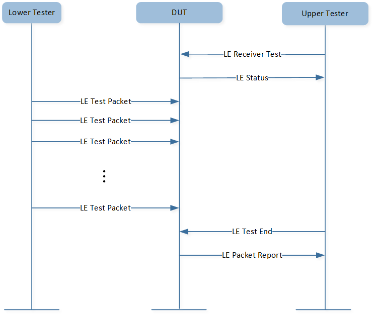
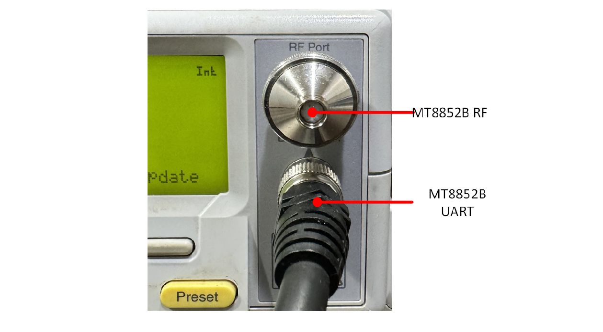
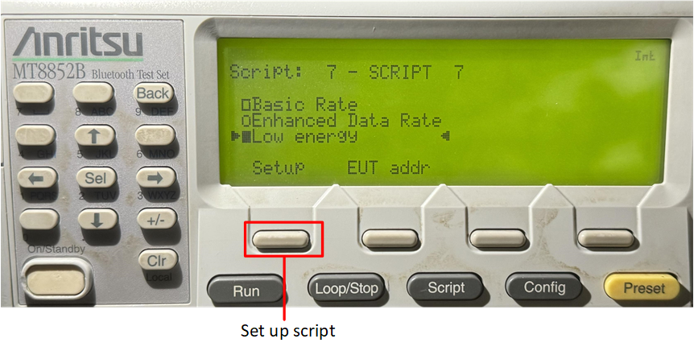
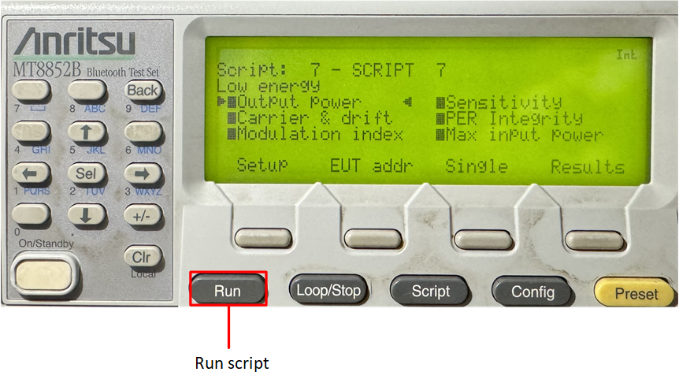
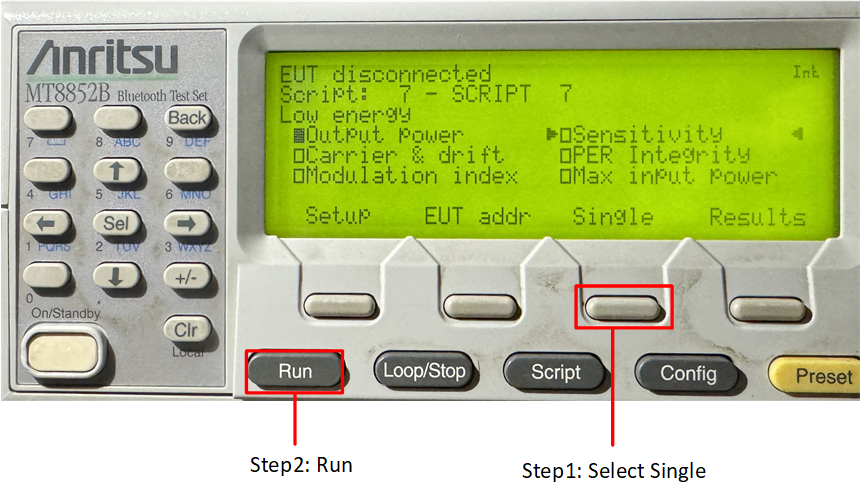
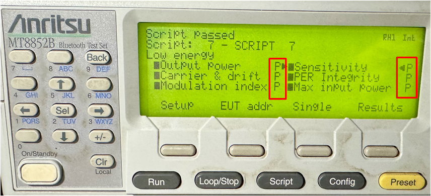

LE DTM
The DTM application is used to control the DUT and provides a report back to the Tester.
Overview
Direct Test Mode is used to test the RF PHY layer of Bluetooth low energy devices. DTM shall be set up by one of the two alternative methods: Over HCI or through a 2-wire UART interface. Each DUT shall implement one of the two DTM methods.
In this document, DUT implements the second method, which is set through a 2-wire UART interface. The test framework of through 2-wire UART interface is shown below:

Test Framework
DUT runs DTM application, and test equipment of MT8852B sends DTM commands to DUT.
DTM application analyzes commands and invokes APIs to send and receive packets from MT8852B.
DTM application collects test results and sends them to MT8852B by DTM events.
MT8852B judges and displays the results.
Transmitter Test

Transmitter Test
Upper tester sends command to DUT to order it to transmit test packets to lower tester. DUT reports event to upper tester after transmit procedure terminates.
Output Power Test
The MT8852B transmits a test control message over the RS232, USB, or 2-wire interface to instruct the DUT to transmit reference test packets. The MT8852B measures the average power of the received packets over at least 20% to 80% of the duration of the burst.
Carrier & Drift Test
The carrier drift test performs a frequency drift measurement over the length of the packet received. The carrier frequency offset is measured similarly to the basic rate initial carrier test, but on the eight preamble bits in the low energy reference packet.
Modulation Index Test
This test measures the modulation characteristics on the DUT output for each of the selected frequency ranges (LOW, MEDIUM, and HIGH).
Receiver Test
{kind=link}

Receiver Test
Upper tester sends command to DUT to order DUT to prepare to receive test packets from lower tester. Lower tester sends test packets to DUT, and DUT reports event to upper tester after receive procedure terminates.
- Sensitivity Test
After sending a test control to prepare the DUT, the MT8852B sends LE reference packets to the DUT. The number of packets DUT received is counted and this data is then read by the MT8852B over the 2-wire connection.
- PER Integrity
The MT8852B sends a random even number of LE reference packets to the DUT at -30 dBm with a PRBS 9 payload. The CRC value for the packets is alternated between a valid and invalid value. The DUT counts the number of received packets and this value is read by the MT8852B over the 2-wire interface for frame error rate (FER) calculation. The test is repeated three times at the frequency selected.
- Maximum Input Power Test
After sending a test control, the MT8852B sends LE reference packets to the DUT at -10 dBm. The number of packets received by the DUT is counted, and this data is then read by the MT8852B over the 2-Wire connection.
Requirements
The sample supports the following development kits:
Hardware Platforms |
Board Name |
|---|---|
RTL87x2G HDK |
RTL87x2G EVB |
To quickly set up the development environment, please refer to the detailed instructions provided in Quick Start.
Wiring
Please refer to EVB Interfaces and Modules in Quick Start.
Building and Downloading
This sample can be found in the SDK folder:
Project file: samples\bluetooth\dtm\proj\rtl87x2g\mdk
Project file: samples\bluetooth\dtm\proj\rtl87x2g\gcc
To build and run the sample, follow the steps listed below:
Open the project file.
To build the target, follow the steps listed in the Generating App Image section in Quick Start.
After a successful compilation, the APP bin
app_MP_sdk_xxx.binwill be generated in the directorysamples\bluetooth\dtm\proj\rtl87x2g\mdk\bin.To download APP bin into the EVB, please follow the steps listed in the MP Tool Download section in Quick Start.
Press the reset button on the EVB and it will start running.
Experimental Verification
This section gives a brief introduction of test steps and test results in detail.
Preparation Phase
Downloading DTM Application
Compile and download dtm application to DUT.
Connecting DUT and MT8852B
The first step is to connect the DUT and MT8852B through the 2-wire UART using RS232. The TX pin and RX pin of the DUT should be connected with the same pin of RS232.
DTM application sets P3_1 as the TX pin of data UART and P3_0 as the RX pin of data UART by default.
#define DATA_UART_TX_PIN P3_1
#define DATA_UART_RX_PIN P3_0
{kind=link}

UART of MT8852B

UART of DUT
Testing Phase
The testing phase includes configuring devices and running MT8852B.
Configuring DUT and MT8852B
As shown below, press the On/Standby button to start MT8852B, and then press the EUT addr button to modify the EUT address.

Start up MT8852B
DUT implements DTM application based on 2-Wire UART, so first press the Sel button, then choose BLE2WIRE as the Source.

Select Source of EUT Address
Press the Setup button to set Low energy script.
{kind=link}

Set Up Low Energy Script
Running MT8852B
Run MT8852B based on cases to be tested.
Run All Test Cases
Press the Run button to run all test cases.
{kind=link}

Run All Test Cases
Run Single Test Case
Choose the case to test and then press the Single button and the Run button to run a single test case.
{kind=link}

Run Single Test Case
Test Results
The passed test result is shown below. The letter P will display after the passed test case.
{kind=link}

DTM Test Result
Code Overview
This chapter will be introduced according to the following several parts:
The directories of the project and source code files will be introduced in chapter Source Code Directory.
The Bluetooth Host will be introduced in chapter Bluetooth Host Overview.
The main function and configurable GAP parameters of this sample will be introduced in chapter Initialization.
The main functions of this sample will be introduced in chapter Main Functions.
The GAP callback handler of this sample will be introduced in chapter GAP Callback Handler.
Source Code Directory
Project directory:
samples\bluetooth\dtm\proj.Source code directory:
samples\bluetooth\dtm\src.
Source files in dtm project are currently categorized into several groups as below.
└── Project: dtm
└── secure_only_app
└── Device Includes startup code.
├── CMSE Library Non-secure callable library
├── Lib Includes all binary symbol files that user application is built on.
├── ROM_NS.lib
└── lowerstack.lib
└── rtl87x2g_sdk.lib
└── gap_utils.lib
├── peripheral Includes all peripheral drivers and module code used by the application.
├── profile Includes LE profiles or services used by the sample application.
└── APP Includes the ble_scatternet user application implementation.
├── data_uart.c
├── app_task.c Create message queue and application task.
├── dtm_app.c Handle commands from MT8852B and return with events.
└── main.c Entry of application, initialize parameters, and register application message callback.
The sample uses default GAP LIB that matches with bt_host_0_0, please refer to Usage of GAP LIB in
Host Image
for more information.
Bluetooth Host Overview
The sample uses the default Bluetooth Host image in bt_host_0_0, please refer to
Host Image
for more information.
For details of Bluetooth technology features supported by the Bluetooth Host, please refer to the file bin\rtl87x2g\bt_host_image\bt_host_0_0\bt_host_config.h.
Initialization
main() function is invoked when the EVB is powered on and the chip is reset,
and it performs the following initialization functions:
int main(void)
{
le_gap_init(0);
gap_lib_init();
app_le_gap_init();
application_task_init();
os_sched_start();
return 0;
}
le_gap_init()function is used to initialize GAP and configure the link number.app_le_gap_init()function is used to initialize the GAP parameters.
More information on LE GAP initialization and startup flow can be found in the chapter GAP Parameters Initialization of LE Host.
Main functions
In dtm_app.c, UART0_Handler() receives commands from MT8852B. Sample code is listed as below:
void UART0_Handler(void)
{
uint8_t uartdata[2] = {0, 0};
uint8_t *p = uartdata;
uint16_t command = 0;
uint32_t int_status = 0;
int_status = UART_GetIID(UART0);
UART_INTConfig(UART0, UART_INT_RD_AVA | UART_INT_LINE_STS, DISABLE);
switch (int_status)
{
case UART_INT_ID_TX_EMPTY:
break;
case UART_INT_ID_RX_LEVEL_REACH:
case UART_INT_ID_RX_TMEOUT:
while (UART_GetFlagState(UART0, UART_FLAG_RX_DATA_RDY) == SET)
{
UART_ReceiveData(UART0, p++, 1);
if (p - uartdata > 2)
{
break;
}
}
command = (uartdata[0] << 8) | uartdata[1];
APP_PRINT_INFO1("FORM 8852B: 0x%x", command);
dtm_test_req(command);
break;
case UART_INT_ID_LINE_STATUS:
break;
default:
break;
}
UART_INTConfig(UART0, UART_INT_RD_AVA, ENABLE);
return;
}
dtm_test_req() handles test command from MT8852B, then invokes GAP API to start test. Sample code is listed as below:
void dtm_test_req(uint16_t command)
{
uint8_t contrl = 0;
uint8_t param = 0;
uint8_t tx_chann = 0;
uint8_t rx_chann = 0;
uint8_t data_len = 0;
uint8_t pkt_pl = 0;
uint8_t cmd = (command & 0xc000) >> 14;
uint16_t event = 0;
//the upper 2 bits of the data length for any Transmitter or Receiver commands following
static uint8_t up_2_bits = 0;
//physical to use
static uint8_t phy = 1;
//modulation index to use
static uint8_t mod_idx = 0;
//local supported features
static uint8_t lcl_feats[GAP_LE_SUPPORTED_FEATURES_LEN] = {0};
switch (cmd)
{
case 0:
contrl = (command & 0x3f00) >> 8;
param = (command & 0xfc) >> 2;
switch (contrl)
{
case 0:
if (param == 0)
{
up_2_bits = 0;
phy = 1;
mod_idx = 0;
}
else
{
event |= 1;
}
dtm_uart_send_bytes(event);
break;
......
case 5:
/*
8852B do not send these commands
0x00 Read supportedMaxTxOctets
0x01 Read supportedMaxTxTime
0x02 Read supportedMaxRxOctets
0x03 Read supportedMaxRxTime
*/
break;
default:
break;
}
APP_PRINT_INFO3("dtm_test_req: up_2_bits 0x%x, phy 0x%x, mod_idx 0x%x", up_2_bits, phy, mod_idx);
break;
......
}
}
dtm_uart_send_bytes() sends event to MT8852B. Sample code is listed as below:
void dtm_uart_send_bytes(uint16_t event)
{
uint8_t uartdata[2] = {0};
uartdata[0] = (event & 0xff00) >> 8;
uartdata[1] = event & 0xff;
uint8_t *p_ch = uartdata;
uint8_t i = 0;
for (i = 0; i < 2; i++)
{
while (UART_GetFlagState(UART0, UART_FLAG_THR_EMPTY) != SET)
{
;
}
UART_SendData(UART0, p_ch++, 1);
}
}
GAP Callback Handler
app_gap_callback() function is used to handle GAP callback messages.
More information on GAP callback can be found in the chapter Bluetooth LE GAP Callback of LE Host.
When the test begins, the GAP Layer will use GAP_MSG_LE_DTM_ENHANCED_RECEIVER_TEST or GAP_MSG_LE_DTM_ENHANCED_TRANSMITTER_TEST message to inform application to perform Transmitter Test or Receiver Test. Sample code is listed as below:
T_APP_RESULT app_gap_callback(uint8_t cb_type, void *p_cb_data)
{
T_APP_RESULT result = APP_RESULT_SUCCESS;
T_LE_CB_DATA *p_data = (T_LE_CB_DATA *)p_cb_data;
uint16_t status = 0;
uint16_t event = 0;
APP_PRINT_INFO1("app_gap_callback: cb_type %d", cb_type);
switch (cb_type)
{
......
#if F_BT_LE_5_0_DTM_SUPPORT
case GAP_MSG_LE_DTM_ENHANCED_RECEIVER_TEST:
#endif
status = p_data->le_cause.cause;
if (status == 0)
{
APP_PRINT_INFO2("app_gap_callback: event 0x%x, status 0x%x", (event & 0x8000) >> 15, event & 0x1);
}
else
{
event |= 1;
APP_PRINT_INFO2("app_gap_callback: event 0x%x, status 0x%x", (event & 0x8000) >> 15, event & 0x1);
}
dtm_uart_send_bytes(event);
break;
......
#if F_BT_LE_5_0_DTM_SUPPORT
case GAP_MSG_LE_DTM_ENHANCED_TRANSMITTER_TEST:
#endif
status = p_data->le_cause.cause;
if (status == 0)
{
APP_PRINT_INFO2("app_gap_callback: event 0x%x, status 0x%x", (event & 0x8000) >> 15, event & 0x1);
}
else
{
event |= 1;
APP_PRINT_INFO2("app_gap_callback: event 0x%x, status 0x%x", (event & 0x8000) >> 15, event & 0x1);
}
dtm_uart_send_bytes(event);
break;
case GAP_MSG_LE_DTM_TEST_END:
status = p_data->p_le_dtm_test_end_rsp->cause;
if (status == 0)
{
event |= 1 << 15;
event |= p_data->p_le_dtm_test_end_rsp->num_pkts;
APP_PRINT_INFO2("app_gap_callback: event 0x%x, packet count 0x%x", (event & 0x8000) >> 15,
event & 0x7fff);
}
else
{
event |= 1;
APP_PRINT_INFO2("app_gap_callback: event 0x%x, status 0x%x", (event & 0x8000) >> 15, event & 0x1);
}
dtm_uart_send_bytes(event);
break;
}
return result;
}
See Also
Please refer to the relevant API Reference: